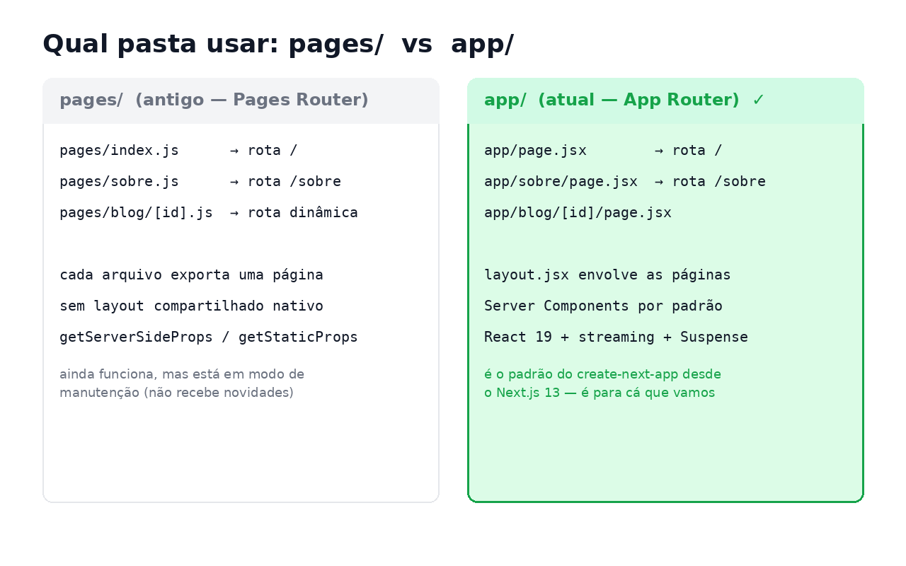

App Router vs Pages Router
Ana criou o projeto dela e o terminal mostrou duas palavras misteriosas: App Router e Pages Router. Parecem nomes de aplicativo de transporte, mas são as duas formas de organizar as rotas do Next.js. Nesta página você vai entender a diferença e por que o guia inteiro usa o App Router.
- O que é o Pages Router (pasta
pages/) e como ele funcionava - O que é o App Router (pasta
app/) e o que mudou - Por que o App Router é o padrão do
create-next-apphoje - Como escolher entre os dois no projeto novo
A ideia: caderno de folhas soltas vs fichário com lombada
Imagine que a Ana tem um caderno para anotar as páginas do site dela. No modelo antigo — o Pages Router — cada folha do caderno é uma página solta: pages/index.js é a home, pages/sobre.js é a página "sobre", pages/blog.js é o blog. Cada arquivo desses exporta um componente e vira uma rota. Só que cada folha é independente: se a Ana quer um menu que apareça em todas as páginas, ela tem que copiar e colar o menu em cada uma das folhas, ou usar um truque com _app.js. É como ter dez cadernos diferentes, um para cada página, e ter que desenhar a mesma capa em todos.
Agora imagine um fichário — o modelo novo, o App Router. Nesse fichário, as folhas ficam presas numa lombada compartilhada: o arquivo app/layout.jsx é essa lombada, e todas as páginas (app/page.jsx, app/sobre/page.jsx…) ficam penduradas nela, herdando o menu, o rodapé e a estrutura de <html>/<body> automaticamente. Além disso, no fichário as folhas podem ser de tipos diferentes: algumas são desenhadas inteiras no servidor (rápidas e leves), outras ganham interatividade no navegador. O Pages Router não tinha essa divisão — era tudo a mesma coisa.
Tecnicamente, o App Router chegou no Next.js 13 (outubro de 2022) e brought os React Server Components: componentes que são renderizados só no servidor e cujo código JavaScript nem é enviado para o navegador. Isso deixou as páginas mais leves e rápidas. Desde o Next.js 13.4 ele é estável, e no Next.js 14/15 virou o padrão — tanto que hoje o create-next-app pergunta "Usar App Router?" e a resposta recomendada é Yes. O Pages Router continua funcionando (muitos projetos legados usam ele), mas está em modo de manutenção: não recebe as novidades novas. Por isso este guia inteiro usa app/.

pages/ (modo manutenção) e app/ (padrão atual, com App Router).| Pages Router | App Router | |
|---|---|---|
| Pasta | pages/ | app/ |
| Página inicial | pages/index.js | app/page.jsx |
| Layout compartilhado | pages/_app.js (truque) | app/layout.jsx (nativo, aninhável) |
| Componentes padrão | sempre no navegador | Server Components (no servidor) |
| Busca de dados no servidor | getServerSideProps / getStaticProps | fetch direto no componente async |
| Status hoje | modo de manutenção | padrão recomendado (Next 13.4+, padrão no 14/15) |
| Suporte a React 19 | limitado | completo |
Como o create-next-app pergunta
Na hora de criar o projeto, o assistente pergunta literalmente ✔ Usar App Router? … Yes/No. No guia inteiro a resposta é Yes. Se você rispondere "No", o projeto cai no modo antigo e os capítulos seguintes (que usam app/, layout.jsx e Server Components) não vão funcionar.
ana@notebook:~$ npx create-next-app@latest meu-app ✔ Usar TypeScript? … Yes ✔ Usar ESLint? … Yes ✔ Usar Tailwind CSS? … No ✔ Usar o diretório src/? … No ✔ Usar App Router? … Yes ← escolha Yes aqui ✔ Usar Turbopack para o dev? … Yes
Quando dá errado
Se a Ana escolheu "No" sem querer e depois tentou criar app/page.jsx, o Next simplesmente não acha nenhuma página e cai no erro real de "rota não encontrada" na hora do build, ou mostra a página padrão antiga. Outro erro real comum: misturar as duas convenções — criar pages/ e app/ no mesmo projeto. O Next até aceita, mas o comportamento fica confuso (as rotas de app/ têm prioridade). O erro real que aparece é:
⚠ Conflicting app and page file was found, "app/page.jsx" will take precedence over "pages/index.js". See https://nextjs.org/docs/messages/conflicting-app-page-file Dica do guia: escolha UMA convenção. Neste guia usamos só app/ — apague a pasta pages/ se o create-next-app criar alguma coisa nela.
Exercícios
1. Qual pasta representa o App Router, o padrão atual do Next.js?
2. Qual é a principal vantagem do App Router sobre o Pages Router?
Exercício 1
O assistente do create-next-app faz a pergunta ✔ Usar App Router?. Qual opção você deve escolher neste guia?